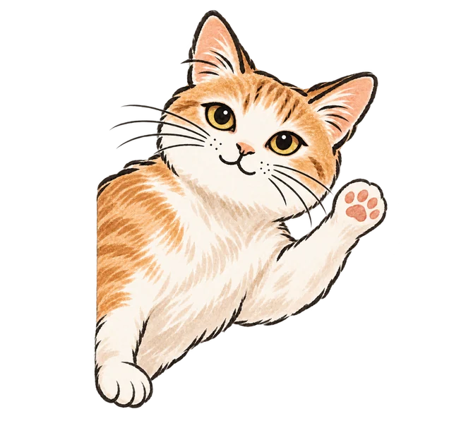

請寵物保母前，飼主一定要問的 8 個問題

文章目錄
請人到府照顧貓咪，等於把家和貓咪暫時交給對方。價格不是唯一的比較點，更重要的是對方怎麼做事。以下八個問題，建議您在預約前都問過一遍，問清楚了，之後才比較安心。
1. 每次到府的是誰？會不會換人？
為什麼要問：貓咪對熟悉的人比較放心，您也比較清楚誰會進出您的家。
好的回答：清楚說明服務的人是誰，臨時無法服務時有什麼替代安排，並事先告知您。
我們的做法：初期由兩位創辦人親自到府，不外包、不排班換人。
2. 一趟多長時間？包含哪些事？
為什麼要問：同樣價格，有的二十分鐘、有的四十分鐘以上，內容也可能差很多。
好的回答：能說出時間與項目，包含餵食、換水、清貓砂、陪玩與觀察，並說明多貓時怎麼調整。
我們的做法：每趟至少 40 分鐘，貓咪超過 2 隻時，每增加 1 隻延長 10 分鐘。
3. 怎麼回報？
為什麼要問：人在遠方，回報是您唯一能看到貓咪狀況的管道。
好的回答：固定回傳照片或影片，並記錄到達與離開時間，發現異常會立刻通知您。
我們的做法：每趟記錄到離時間，拍照、錄影回報。
4. 簽不簽合約？合約寫了什麼？
為什麼要問：合約是雙方責任的依據，也能避免事後各說各話。
好的回答：服務內容、費用、取消規則、責任範圍、個人資料保護都有書面記載，建議也問清楚對方是否有責任險，以及責任如何劃分。
我們的做法：簽訂正式服務合約，簽署後 PDF 會寄到您的信箱。
5. 貓咪突然生病或受傷，怎麼處理？
為什麼要問：緊急狀況發生時，沒有時間臨時討論。
好的回答：事先約定指定醫院、費用授權上限與聯絡順序，並先嘗試聯絡您，不是擅自決定。
我們的做法：簽署緊急醫療授權書，需要就醫會先聯絡您，陪同就醫另計。
6. 鑰匙與進出住家怎麼處理？
為什麼要問：鑰匙遺失或外洩，風險比一般的服務糾紛更大。
好的回答：有多種交接方式可以選擇，鑰匙標籤不寫地址，服務結束後歸還或刪除密碼。
我們的做法：提供電子鎖密碼、家訪當天交付、管理室寄放、指定信箱等方式，多數免費，標籤絕不寫地址。
7. 費用怎麼算？有沒有另計項目與取消規則？
為什麼要問：基本價格以外的加價，是最常讓人意外的地方。
好的回答：清楚列出距離、多貓、假日、時段與加購項目，說明付款方式與取消規則。
我們的做法：價格公開在官網，簽約前會逐項確認，服務前先簽費用結算表。
8. 可以先家訪、先見面嗎？
為什麼要問：見過面、看過環境，才知道這個人是否讓您放心，對方也才能掌握貓咪的狀況。
好的回答：願意在正式服務前安排見面，並說明家訪是否收費。
我們的做法：首次家訪免費，採預約制。
小提醒
問題問得越具體，越能看出對方的做法是不是真的完整。如果對方回答含糊，建議再多問幾個問題，或比較其他選擇。想進一步了解怎麼挑選，可以看 高雄寵物到府服務推薦：怎麼挑選適合您家貓咪的到府照顧？